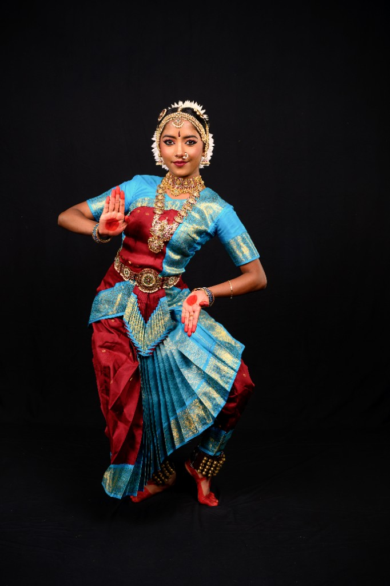

1.a
Pushpanjali
Ragam Saraswathi
Thalam Adi
Choreography Guru Smt. Chandna Talluri
A traditional devotional opening item in Bharatanatyam. It serves as an invocation piece asking for the blessings of Goddess Saraswathi—the deity of knowledge, music, arts, wisdom, and learning—before beginning a performance or practice session.
